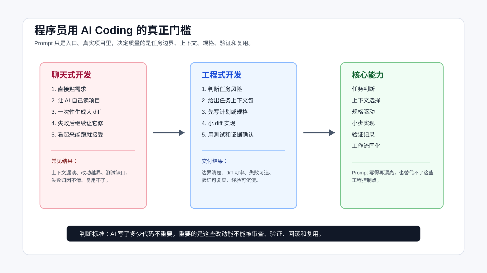

程序员用 AI Coding，真正的门槛不是 Prompt
很多程序员第一次认真用 AI 写代码，都会经历一个很短的兴奋期。
它能在几十秒里补完一个函数，能把一段报错解释得像模像样，能根据现有代码风格生成一组测试。你会觉得这东西确实能省时间。再过几天，另一个感受会冒出来：它也很容易把事情搞乱。
它会漏掉关键文件，会把测试失败归因成历史问题，会顺手重构无关代码，会把一个局部需求扩成一片大 diff。最麻烦的是，它经常讲得很有把握，让你以为它真的理解了项目。
所以程序员用 AI Coding，门槛不在于会不会写一句漂亮 prompt。
门槛在工程控制：任务能不能分级，上下文能不能给准，diff 能不能收住，验证证据能不能留下来。

这张图的左边，是很多人默认走的聊天式开发；中间，是更适合真实项目的工程式开发；右边，是需要逐步补齐的核心能力。
Prompt 为什么不够
Prompt 有用，但它只是入口。
比如你可以这样写：
请你作为资深后端工程师，帮我修复订单状态回退的问题。要求代码简洁、考虑边界、补充测试。
这句话看起来很完整。它有角色，有任务，有质量要求。问题是，对真实代码库来说，它缺了最关键的东西：
- 订单状态有哪些历史兼容逻辑？
- 哪些状态流转不能改变？
- 哪些文件是入口，哪些文件只是同名但无关？
- 当前失败能不能稳定复现？
- 修完以后跑哪个测试能证明问题解决？
- 如果测试失败，怎么判断是不是本次改动导致？
这些信息不在 prompt 里，AI 就只能猜。
程序员会觉得“这些我心里有数”。但 AI 不知道。它只看到你给它的上下文、它自己读到的文件、工具返回的结果，以及对代码模式的推断。
先记住一个事实：你脑子里的项目经验，如果没有变成上下文、规则、测试或验证记录，就不能稳定约束 AI。
会写代码的人，常常会低估流程
不懂代码的人用 AI，经常会被卡在基础问题上：环境起不来、报错看不懂、依赖装不上。
程序员的问题不一样。你知道怎么修，也知道 AI 生成的大概方向对不对，于是很容易跳过工程流程，直接让它开改。
这反而危险。
因为你会在脑子里自动补全很多缺失信息：这个接口不能改、这个 helper 要复用、这个测试环境要先起 Redis、这个字段历史上有兼容逻辑。你知道这些，但 AI 不知道。你越熟悉项目，越容易以为它也“应该知道”。
真实项目里，AI 写错代码通常不是最严重的问题。最严重的是它在错误上下文里写出了看起来很合理的代码。
比如：
你让 AI 修复优惠券过期判断。
AI 找到 CouponService，补了一个日期判断。
测试也过了。
但真实入口在 CouponAvailableQueryService。
CouponService 只是老接口兼容层。
它改对了一个局部文件，却没有改到真实调用路径。
这类错误靠更长的 prompt 不一定能解决。它需要代码地图、调用链、测试入口和任务上下文包。
先区分两种 AI Coding
我建议先把 AI Coding 分成两类。
第一类是聊天式开发。
它的流程大概是：
描述需求
让 AI 实现
看结果
继续让 AI 修
这种方式适合低风险任务。比如写一个脚本、补一个小函数、解释一段报错、生成一份临时 SQL。它快，成本低，不需要很重的流程。
第二类是工程式开发。
它的流程是：
判断任务风险
选择工具工作面
准备上下文
写计划或规格
小步实现
运行验证
审查 diff
沉淀规则
这种方式适合真实项目里的需求开发、bug 修复、前后端联调、老项目改造和代码审查。
两者不是谁替代谁。关键是别拿聊天式开发去处理工程式任务。
如果一个任务满足下面任意两条，就应该按工程式开发处理：
- 需要改多个文件。
- 涉及业务状态、权限、金额、数据一致性。
- 需要兼容旧行为。
- 需要补测试或改测试。
- 失败后定位成本高。
- 改错后回滚成本高。
- 需要别人审查。
门槛一：任务判断
让 AI 开始写代码之前，先问一个问题：
这个任务到底能交给 AI 到什么程度？
不是所有任务都能直接授权。
可以按下面这张表判断：
| 任务 | AI 可以做 | 人必须控制 |
|---|---|---|
| 局部函数 | 生成实现、补边界测试 | 输入输出、异常语义 |
| 陌生模块理解 | 建代码地图、列调用链 | 判断它是否读到关键路径 |
| Bug 排查 | 分析日志、列假设、写复现脚本 | 确认根因和修复策略 |
| 跨模块需求 | 写计划、拆任务、生成小 diff | 架构边界和兼容策略 |
| 权限/金额/状态 | 辅助列风险和测试点 | 业务规则、上线决策 |
| 重构 | 拆小步、补回归测试 | 外部行为不变和回滚路径 |
这一步的价值很直接：它决定你应该给 AI 多少权限。
有些任务可以让 AI 直接改代码。有些任务只能让 AI 先读文件、列影响面。有些任务可以让 AI 写测试，但修复策略要人先定。有些线上风险任务，AI 只能做分析助手。
一个可靠的起手式是：
先不要改代码。
请你先判断这个任务适不适合交给 AI 实现：
1. 这个任务属于局部改动、跨模块需求、bug 排查、重构，还是高风险业务改动？
2. 你需要先读取哪些文件？请列出路径。
3. 哪些行为不能改变？
4. 如果要实现，建议拆成几个小步骤？
5. 每一步用什么命令或测试证明完成？
这段话不会让 AI 变聪明，但会让它先暴露理解过程。
把任务判断落成授权级别
任务分级如果只停留在脑子里，对 Agent 没有约束力。真正要写给 Agent 的，是授权级别。
可以把一次任务分成四档：
| 授权级别 | 适用场景 | 给 AI 的权限 | 人要检查什么 |
|---|---|---|---|
| 只读分析 | 线上事故、需求不清、业务规则未确认 | 读文件、读日志、列事实和假设 | 是否把猜测写成事实 |
| 计划优先 | 跨模块需求、状态机、权限、金额 | 读仓库、列文件、写计划，不改代码 | 文件是否读对，计划是否越界 |
| 小步实现 | 局部 bug、已有测试、影响范围可控 | 按一个 task 修改，完成后停止 | diff 是否只服务这个 task |
| 自动执行 | 文档、样例、局部机械同步 | 直接改并验证 | 命令输出和残余风险 |
这个表的作用，是把“AI 能不能做”改成“AI 现在能做到哪一步”。
例如订单状态回退问题，第一轮通常不该让 AI 直接实现。更合适的授权是：
你现在只做计划优先模式。
允许：
- 读取订单状态流转相关文件。
- 列出实际读取过的路径。
- 整理现有状态迁移和测试覆盖。
- 给出最小实现计划。
不允许：
- 修改代码。
- 修改测试。
- 推断业务规则。
- 新增依赖或重构状态机。
停止条件：
- 发现状态规则需要业务确认。
- 发现真实入口不止一个。
- 发现现有测试和代码语义冲突。
这段约束看起来比一句 prompt 硬，但它符合真实开发。程序员不会把一个没确认业务规则的状态机任务直接交给新人改；AI 也一样。
如果你不写授权级别，Agent 往往会默认自己可以继续往下做。它读到文件以后会改代码，测试失败后会继续修，修不动时会扩大范围。很多大 diff 就是这样长出来的。
授权失败通常不是一句话就能看出来。它会表现成几种信号：Agent 没有读到真实入口却开始实现；计划里出现你没有要求的重构；测试失败后它直接修改断言；为了让命令通过新增依赖或调整配置。看到这些信号，不要继续追问“再修一下”，要把任务退回到只读分析或计划优先模式。
门槛二：上下文选择
AI Coding 的质量，很大程度取决于上下文。
上下文不是把仓库全塞进去，也不是只贴一个需求描述。上下文要刚好覆盖当前任务。
一个最小任务上下文包可以包括：
# Task Context
## Goal
- 要改变什么行为？
- 哪些行为不能改变？
## Files
- 入口：
- 核心实现：
- 测试：
- 配置：
- 历史兼容逻辑：
## Constraints
- 不新增依赖：
- 不改公开 API：
- 不改 generated 文件：
- 不做顺手重构：
## Done When
- 哪些测试通过：
- 哪个页面或接口验证：
- 哪个 bug 不再复现：
- diff 限制在哪些文件：
这个模板不复杂，但它能解决两个问题。
第一，它让 AI 知道边界。
第二，它逼你自己先想清楚任务。
如果你写不出 Done When，就说明你还没定义完成。如果你列不出核心文件，就说明现在让 AI 改代码还太早。
配套代码仓库 DavidDingXu/learn-ai-coding 的工具 module 里有一个最小工具，可以直接生成任务上下文包：
cd learn-ai-coding/ai-coding-workflow-kit
node src/cli.js task-context \
--title "修复订单状态回退问题" \
--files "src/order.ts,test/order.test.ts" \
--constraints "不改公开 API,不新增依赖" \
--done "npm test,人工验证支付回调"
它不会替你理解业务，但能把一次 AI Coding 任务最容易漏掉的信息固定下来。
门槛三：小步实现
AI 很容易一次改很多。
它会觉得顺手整理命名、抽函数、改测试结构、删掉“重复逻辑”都是好事。对它来说，这些都是合理的代码改进。对真实项目来说，这些可能都是风险。
所以要限制 diff。
可以这样要求：
这次只完成第一个小步骤。
限制：
- 只改计划中列出的文件。
- 不做顺手重构。
- 不新增依赖。
- 不改公开 API。
- 如果必须扩大范围，先停下来说明原因。
完成后输出：
- 改了哪些文件。
- 每个文件为什么改。
- 跑了什么验证。
- 还有什么风险没覆盖。
小步不是慢。小步是为了让审查、测试和回滚变便宜。
如果 AI 一次生成 800 行代码，你可能要花半小时才能判断它有没有越界。如果它一次只改 60 行，并且每个文件都有理由，审查就容易很多。
程序员要控制的不是一次生成多少代码，而是每次改动是否能被检查。
门槛四：验证证据
AI 说“已经修复”没有意义。
你要看证据。
一次改动至少要留下这些信息：
## Baseline
- 改前怎么复现问题？
## Change Summary
- 改了什么？
## Verification Commands
```bash
npm test
Evidence
- PASS 多少测试？
- 页面或接口怎么验证？
Residual Risk
- 哪些路径还没覆盖？
配套工程的工具 module 里也放了一个验证记录检查器：
```bash
cd learn-ai-coding/ai-coding-workflow-kit
node src/cli.js verify-ledger --file examples/verification-ledger.pass.md
它会检查验证记录里有没有关键段落、命令块和通过信号。
这不是为了形式化写文档，而是为了防止一个常见问题：AI 把“我认为修好了”包装成“已经完成”。
如果没有 baseline，就不知道问题原来是否存在。 如果没有命令，就不知道验证怎么做。 如果没有通过信号，就不知道结果是否真实。 如果没有残留风险，就不知道还有哪些路径没覆盖。
门槛五：复用经验
如果你第二次提醒 AI 同一个规则，就应该考虑把它写下来。
比如：
- 这个项目用
pnpm，不要用npm。 - 前端改动必须打开页面验证。
- 不要编辑 generated 文件。
- 不要新增生产依赖，除非先确认。
- 测试失败不能直接归因历史问题，必须先跑改前基线。
这些规则可以写进 AGENTS.md、CLAUDE.md、Copilot instructions、Skill、脚本或 checklist。
规则文件解决的是项目上下文。 Skill 解决的是重复流程。 脚本解决的是确定性动作。 MCP 解决的是必要外部资源接入。 多 Agent 解决的是可并行、可隔离的任务拆分。
它们不是互相替代的概念，而是一条递进线。
你先让 Agent 会做事，再约束它做对事；再把有效流程固化下来；再决定是否给它接外部资源；最后才考虑多 Agent。
能力自测：你现在卡在哪一层
可以用这张表给自己打分。
| 能力 | 低阶表现 | 专业表现 |
|---|---|---|
| 任务判断 | 看到需求就让 AI 改 | 先判断风险和授权范围 |
| 上下文选择 | 贴需求或塞大量文件 | 给代码地图和任务上下文包 |
| 计划拆解 | 接受 AI 一次性实现 | 要求先计划，再小步改 |
| 代码审查 | 看结果能不能跑 | 看 diff 是否越界 |
| 测试验证 | 接受“已修复” | 要求 baseline、命令、证据 |
| 调试 | 让 AI 连续猜 | 复现、假设、验证逐步推进 |
| 经验复用 | 每次重新解释 | 写进规则、Skill 或脚本 |
如果你只能优先补三项，我建议补：
- 任务判断。
- 上下文选择。
- 验证证据。
这三项决定下限。工具技巧、框架和多 Agent 都是后面的事。
这件事怎么落到日常开发
日常开发里，不需要每次都搞一套很重的流程。你可以先给自己定三个默认动作。
第一个默认动作：让 AI 先说明它读了什么。
很多 AI Coding 事故都和“以为它读了，其实没读”有关。让它输出实际读取过的文件路径，不是为了形式感，而是为了把理解范围暴露出来。它如果没读测试文件，就不要相信它对验证的判断；它如果没读调用入口，就不要相信它对影响面的判断。
第二个默认动作：让 AI 先给计划，不要直接改。
计划不是长篇方案。一个小需求可以只要 3 行计划：改哪个文件、为什么改、怎么验证。只要 AI 写不出这个计划，就说明它还没准备好进入实现。
第三个默认动作：把“完成”改成证据。
不要问“你修好了吗”。要问“你跑了什么命令，输出是什么，diff 是否只在计划范围内，还有哪些风险没覆盖”。这样问，AI 的回答才会从主观承诺变成可检查记录。
这三个动作不会让流程变复杂。它们只是把程序员本来就在脑子里做的判断，提前放到台面上。
如果你在团队里做 code review，也可以用同样的标准看 AI 生成的 PR：
- PR 描述里有没有任务边界？
- diff 是否出现无关重构？
- 测试是否覆盖真实风险？
- 失败路径有没有被解释清楚？
- 是否有“AI 觉得无关”但没有证据的测试失败？
一旦这样审查，你会发现 AI Coding 和普通开发并没有两套质量标准。AI 只是让代码生成速度变快了，但工程质量仍然要靠同一套东西：边界、测试、审查、验证和复盘。
个人使用 AI Coding 时，也可以按 PR 的标准要求自己。哪怕没有真正提交 PR，也要能回答：这次改动为什么必要，哪些文件被改，哪些验证跑过，哪些风险没有覆盖。只要这些问题答不上来，说明任务还没有进入可交付状态。
跟着做一次小练习
找一个你最近真的要改的小需求。不要让 AI 直接实现。
先让它做这件事：
先不要改代码。
请你根据当前仓库，帮我完成一次实现前检查：
1. 列出你需要读取的文件路径。
2. 判断这个任务属于低风险、中风险还是高风险。
3. 写一个最多 4 步的小步计划。
4. 每一步说明如何验证。
5. 如果上下文不足，只提问题，不要猜。
然后你自己检查它的输出：
- 它列的文件是否真的是关键路径？
- 它有没有漏测试？
- 它有没有把高风险任务说成低风险？
- 它的验证方式是不是可执行命令？
- 它有没有准备一次改太多？
这一步练熟以后，再让 AI 写代码。
这一轮做完再进入实现，AI 的输出审查成本会低很多。原因不在某句 prompt，而在于任务已经被放进了明确的工程流程。
常见问题
Prompt 还重要吗？
重要，但不要把它当全部。
Prompt 负责表达当前任务。项目规则、上下文包、测试、验证记录和 Skill，负责承载长期稳定的工程约束。真实项目里，这几类东西要一起用。
我是不是每个小需求都要写规格？
不用。
局部、低风险、可快速验证的任务，可以直接走轻量流程：任务说明、相关文件、小 diff、跑测试。跨模块、影响业务状态、回滚成本高的任务，再进入规格驱动。
AI 写的大 diff 如果看起来很好，要不要接受？
先拆。
让 AI 解释每个文件为什么改，再把无关改动剥离出去。真正好的 AI Coding 结果，不只是代码能跑，还应该能被正常审查。
什么时候该写 Skill？
当一个流程重复出现，而且每次都要解释很多规则时。
比如调试流程、代码审查流程、完成前验证流程、前端截图验证流程。这类流程适合沉淀成 Skill。一次性的任务背景不适合写 Skill，放在任务上下文包里就够了。
MCP 是不是也要早点学？
不需要。
先学会任务判断、上下文、验证和规则文件。等你遇到 AI 需要查文档、看 Issue、读只读数据、操作浏览器、访问代码索引时，再学 MCP 接入边界。MCP 的价值是安全接外部资源，不是自动让代码变好。
工程流程会不会限制 AI 的发挥？
会限制，而且应该限制。
真实项目需要的是可审查的输出，不是最大化生成内容。AI 一次改很多文件，看起来像效率高，但 reviewer 看不懂、测试说不清、回滚切不开，最后还是返工。
工程流程不是让 AI 少做事，而是让它在正确边界里做事。低风险任务可以放宽，高风险任务必须收紧。
先把底座搭起来
程序员用 AI Coding，起点不是把 prompt 写得更漂亮。
先把底座搭起来：判断任务风险，给对上下文，限制 diff，留下验证证据，把反复有效的经验沉淀下来。
这些动作做稳以后，AI 才会从会写代码的聊天窗口，变成可以被约束、检查和复用的开发工具。
可复查资料
- OpenAI Codex 最佳实践：https://developers.openai.com/codex/learn/best-practices
- OpenAI Codex
AGENTS.md指南：https://developers.openai.com/codex/guides/agents-md - Anthropic Claude Code 最佳实践：https://www.anthropic.com/engineering/claude-code-best-practices
- GitHub Copilot coding agent 任务说明：https://docs.github.com/en/copilot/tutorials/coding-agent/get-the-best-results